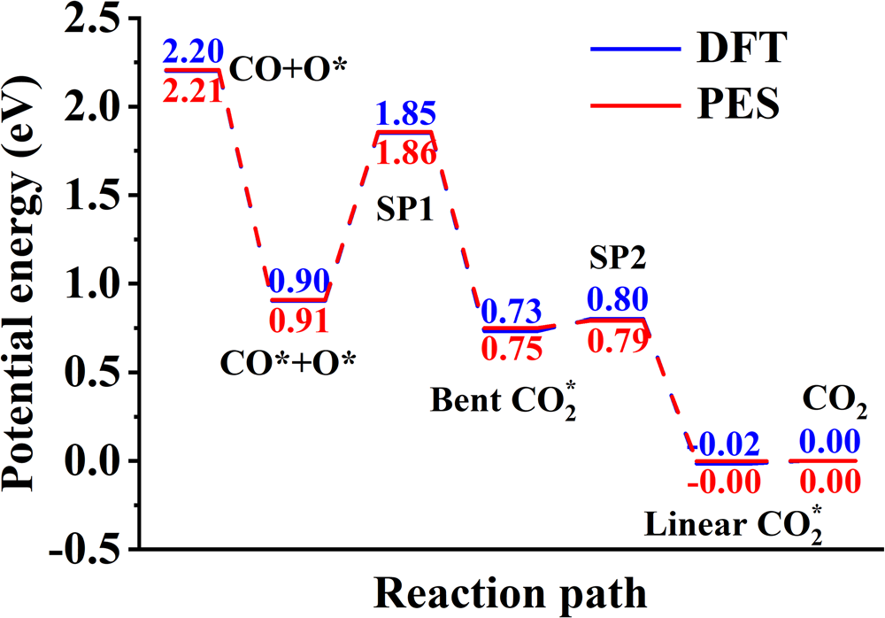
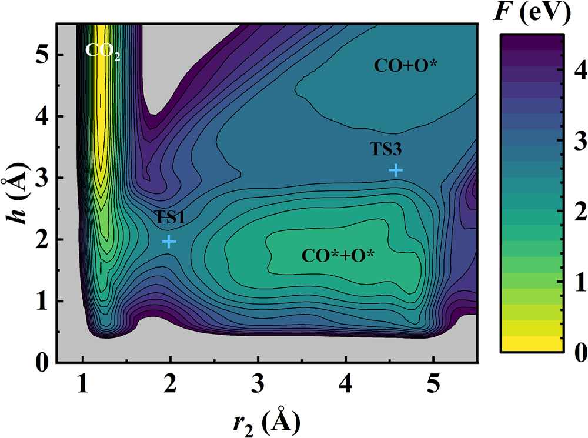
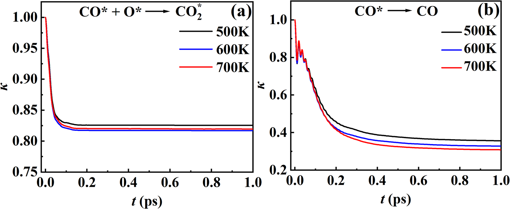
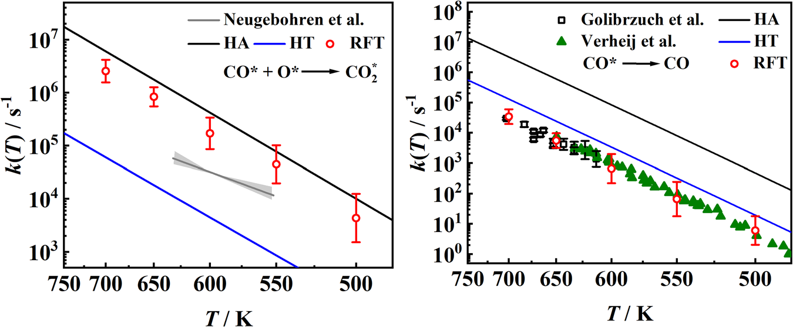

Pt(111)上的CO氧化与脱附：为什么自由能越垒之后，还要计算净反应通量
论文原文 ↗原文：Chen Li、Xiongzhi Zeng、Yongle Li、Zhenyu Li、Hua Guo、Bin Jiang，First principles reactive flux theory for surface reactions revealing multiple channels and recrossing dynamics，Nature Communications，2026年在刊稿，DOI：10.1038/s41467-026-77226-4。实际读取PDF共9页。
铂表面上一个吸附CO分子有两种去向：与邻近吸附氧反应，生成CO₂；或者不发生氧化，直接离开表面。要预测哪条过程更快，常见做法是用密度泛函理论（DFT）寻找反应物和过渡态，计算势垒及振动频率，再用过渡态理论估算速率。这条路线很方便，却有两个容易忽略的问题：吸附分子未必只是待在一个位置附近振动；跨过过渡区域的轨迹也未必最终成为产物。
本文把这两件事分别计算。作者先用机器学习势进行充分的热运动采样，得到同时涵盖氧化和脱附的自由能面，再从过渡区域发射大量无偏轨迹，扣除返回或反向运动造成的通量抵消。最终得到的是**反应通量理论（RFT）**速率，并用两种近似过渡态理论和实验作对照。
一、方法怎样做：先统计热构型，再跟踪真正的越垒运动
用同一势能面描述成键、扩散和离开表面
作者用RPBE密度泛函数据训练嵌入原子神经网络势（EANN）。它接收原子构型，输出能量和力，替代每一步昂贵的电子结构计算。模型为四层Pt的3×3周期表面，其中上两层可动，下两层固定，表面有一个CO和一个额外O原子。总共21个可动原子，对应63个坐标自由度；论文所称“全维”指这一模型中全部可动自由度。（第6页）

图1｜原文Figure 1，PDF第3页。蓝色为DFT、红色为神经网络势，星号表示吸附物种。横轴依次经过共吸附反应物、成键鞍点SP1、弯曲CO₂、第二鞍点SP2和线性CO₂；纵轴为势能。两种计算在这些关键位置接近，说明拟合保留了路径上的主要能量关系。
顺着氧化路径看，CO靠近额外O，跨过约0.95 eV的成键势垒，先形成弯曲、较强吸附的CO₂，随后转成线性、弱吸附的CO₂并逃离表面。与此同时，CO还可以扩散到不同表面位置，或者直接脱附。其表面扩散势垒只有约0.05 eV，在500—700 K下相当容易发生。于是，把CO的横向运动都看成一个吸附井附近的小振动，会漏掉大量可达位置，低估反应物熵。
三个集体变量让两条出口同时进入自由能统计
集体变量是从众多原子坐标中提取的少数过程描述量。本文选择C到两个O的距离r₁、r₂，以及C相对表面的高度h。距离识别成键，高度识别离开表面；两个O还可以交换身份，因此两个距离都要保留。只记录一个成键距离，会把另一个氧的交换及CO向真空运动藏在未充分采样的自由度里。
作者使用良好调节元动力学：在已经到访的集体变量区域逐渐加入偏置，帮助体系离开长期滞留的自由能井，探索平常很少到访的过渡区域。去除偏置影响后，得到原体系的三维自由能面。自由能面不仅记录能量，还包含在给定温度下相应构型有多少、出现概率多大。 偏置轨迹中的反应发生时间并不直接用来算速率。

图2｜原文Figure 2，PDF第4页。600 K三维自由能面对r₁作统计积分后的二维展示：横轴r₂为成键距离，纵轴h为C高度，颜色为自由能。反应物区域向左经过TS1通向CO₂，向上经过TS3通向气相CO；两条出口都在同一采样空间内。
随后，对非目标变量的热统计权重积分，得到每条通道的一维平均力势，也就是沿所选反应坐标的自由能曲线。静态速率比较过渡区域的统计权重与整个反应物区域的统计权重，再结合相应热运动速度。这个步骤解释了为什么不能只把“峰减谷”的自由能高度代进一个通用前因子：反应物可以在表面访问多少位置，同样会改变速率。（第5—6页）
越垒后会不会回来，需要独立的无偏动力学
作者把反应物与产物之间的一道分割面放在相应自由能峰值附近，在面上采样热构型和动量，再释放大量轨迹朝两侧运动。短时间统计初始正向穿越，较晚时刻则计算真正保留下来的净通量。论文用Bennett–Chandler分解表达这一步：
\[ k(T)=\kappa\,k_{\mathrm{TST}}(T). \]
这是第5页式(4)的论文原式。T为温度，k与k_TST分别是最终速率系数和短时正向通量给出的速率系数，具有相同单位；κ是无量纲传输系数，由反穿越衰减后的通量平台得到。它把“瞬时越过去了”修正为“最终净反应了多少”。氧化是表面双分子过程，原始系数为cm²/s；为与低CO剂量实验比较，作者结合实验氧表面数密度换成s⁻¹的伪一级速率。脱附本身是单分子过程，单位为s⁻¹。
一个关键细节是，κ保留初始速度的正负号。初始朝产物方向、后来返回的轨迹会减少正通量；初始朝反应物方向、后来反弹到产物的轨迹，则以负通量抵消。因而κ并不是把正向出发的轨迹简单分成成功和失败后的比例。在充分采样的理论极限中，移动分割面会同时改变静态通量和κ，二者乘积保持不变。
二、主要结果：两条通道的动力学修正不同，熵处理同样重要
1. 氧化和脱附势垒接近，反穿越却来自不同运动
600 K下，氧化自由能垒约1.02 eV，CO脱附约1.17 eV。两者接近，说明脱附是采样时不能忽略的竞争出口。它们的动力学修正却很不一样。（第3页）

图3｜原文Figure 3，PDF第4页。a为氧化、b为CO脱附；横轴为轨迹时间，纵轴为传输系数κ。黑、蓝、红分别为500、600、700 K。注意两幅图纵轴范围不同：氧化平台约0.82，脱附平台在约0.3—0.35附近。
氧化分割面放在成键距离r₂＝1.98 Å处，κ迅速降至约0.82，即反穿越把同一自由能统计下的速率减少约18%。作者对轨迹的解释是：新C—O键的伸缩运动，需要把能量传给CO₂垂直于表面的质心平动，分子才能真正逃走；能量转换不够有效，已经朝成键方向运动的轨迹就可能回到CO＋O。
脱附分割面放在高度h＝3.04 Å处，κ不到1 ps便趋于约0.3，修正更强。这里主要的抵消轨迹起初朝表面运动，随后从表面回弹，最终成为脱附CO。由于初始方向为负，它们在净通量中贡献负号。两条通道都存在反穿越，但不能用同一种“产物又回来了”的故事概括。 具体运动解释来自作者正文对补充轨迹的讨论；原始轨迹不在这份9页PDF中。
2. 传统谐振速率偏大，主要问题首先是反应物熵
作者在同一势能面上比较三种方法：谐振近似过渡态理论（HA），把各自由度视为局部振子；受阻平移过渡态理论（HT），允许吸附物在周期起伏表面上平移；以及充分采样自由能并加动力学修正的RFT。固定势能面作比较，才能把速率模型的差别与电子结构方法的差别分开。

图4｜原文Figure 4，PDF第5页。左为氧化，右为CO脱附；横轴温度从左向右降低，纵轴为对数速率。黑线HA、蓝线HT、红点RFT，灰线或其他符号为实验。红点误差棒来自三次独立元动力学的标准差。
氧化中，HA比HT高两个数量级；扣除反穿越后，RFT仍比HT高约一个数量级。κ约0.82只带来18%的修正，显然解释不了如此大的差别。关键是CO横向运动很软：HA漏掉反应物可访问的表面位置，低估其统计权重，因此高估速率。HT改善这一点，但对其他吸附物、过渡态与柔软表面振动的简化又可能使它低估速率。RFT通过真实热采样处理这些贡献。（第3—4页）
3. 与实验的接近程度，也帮助定位剩余误差
RFT氧化速率仍比实验高4—5倍。作者提出，RPBE势能面的系统偏差和较小周期超胞都可能参与剩余差异。脱附的RFT与实验达到半定量一致，HT绝对值也接近实验，但这里实验没有共吸附氧，而模型中有氧；DFT显示共吸附会改变CO吸附能约0.1 eV。此外，常用广义梯度近似对Pt上CO吸附位点的偏好存在已知困难，会影响表面起伏和熵。因此，脱附数值接近实验时也需要保留这个模型条件。（第4页）
三、贡献在哪里：把构型统计与净动力学分开，而不是把所有误差归给能垒
本文新增的能力，是在有竞争通道的表面反应中，把多维自由能采样接到可计算的净反应通量上。一个模型、一次多通道自由能描述，能够分别给出氧化和脱附速率；每条通道的动力学修正独立求取。由此，速率误差可以具体追问：反应物熵是否被低估，分割面上的瞬时通量是否被反穿越抵消，还是参考势能面本身不够准确？
它带来的物理认识也很具体：成键与产物逃逸需要不同运动之间的能量转换，脱附净通量还可能被初始朝表面的回弹轨迹抵消。更一般的意义在于，一个自由能势垒已经包含热统计，却仍没有替代动力学检验。
关键边界：验证对象是500—700 K下有限Pt(111)模型中的CO/O，采用经典核运动；本文没有检验氢转移、低温隧穿或任意复杂催化网络的普适性。独立补充信息未包含在本地PDF中，训练细节、原始轨迹和完整收敛检查未另行读取；最终速率仍受DFT与有限表面模型影响。
附：原始摘要完整中文翻译
非均相反应通常包含多个基元步骤，它们的速率系数对于阐明这些过程的机理和微观动力学具有根本重要性。用于计算表面反应速率系数的过渡态理论（TST），往往仅依赖吸附物振动的谐振近似，并忽略反穿越动力学。这里，我们将元动力学与更一般的反应通量方法结合，用以计算表面反应的速率系数，从而克服TST的这些局限。我们把这一方法应用于一个教科书式的表面反应——Pt(111)上的CO氧化，该反应的速率常数已有实验测量；计算使用了由第一性原理数据构建的全维神经网络势能面。通过引入三个集体变量，获得了一个多维自由能面，由此得到的CO氧化以及与之竞争的CO脱附速率系数都与实验数据相符。我们的结果揭示，两种反应都存在动力学反穿越，但它们分别源于不同的物理机制。这一方法构成了一个从第一性原理计算表面基元过程速率系数的一般框架，而这对于发展具有预测能力的非均相催化动力学模型至关重要。